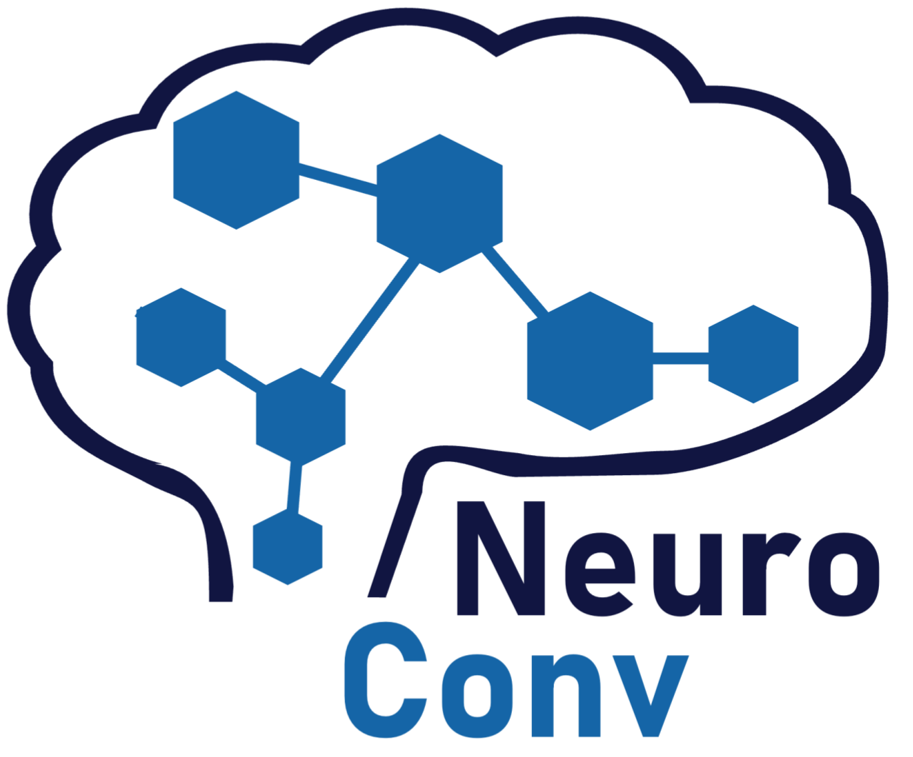
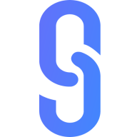
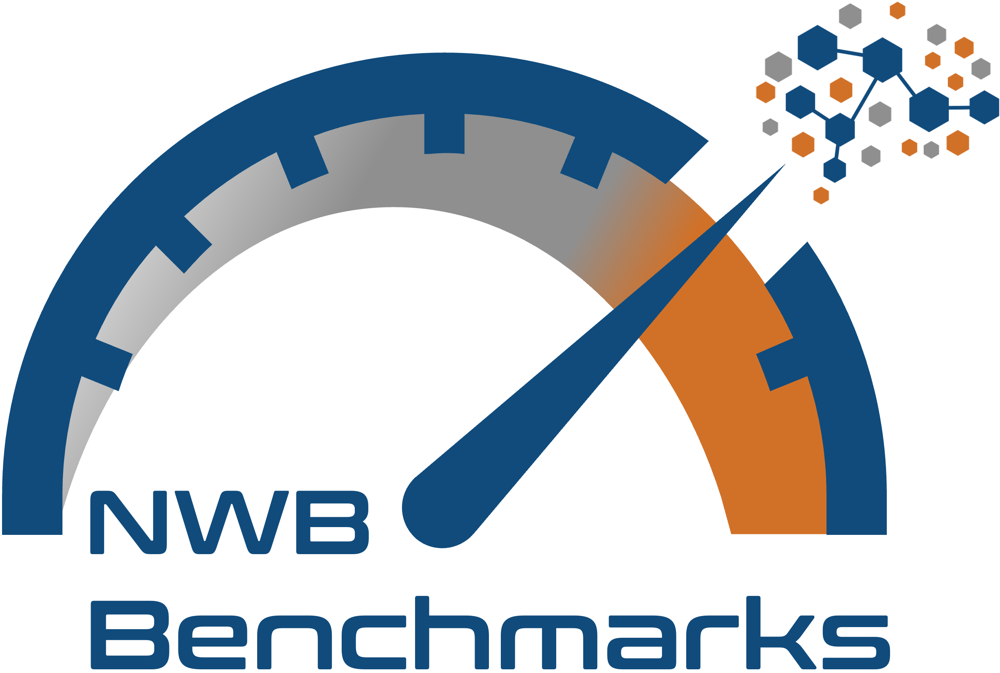
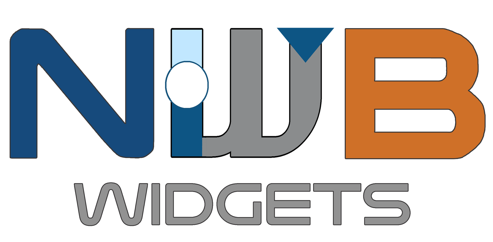

Experienced data scientist and software engineer with 12 years spent designing, conducting, and
sharing results of complex research. Worked with faculty, staff, and students from dozens of top
universities to achieve excellence in the preparation and performance of research-related tasks,
including data management, hypothesis formulation, and both mathematical and statistical modeling.
Possesses a diverse set of software skills, including DevOps, full-stack app development,
performance benchmarking, ETL, and cloud deployments. Enjoys hosting workshops and hackathons to
train users in state-of-the-art technologies and best practices. Familiar with a large number of
data formats, with a strong concentration on updating local file standards to more cloud-performant
ones. Knowledgeable about various mathematical and statistical applications, including
high-dimensional time series analysis, nonlinear dynamics, and machine learning.
Relevant coursework: machine learning, Bayesian statistics, network science, stochastic analysis, time series analysis, partial differential equations, nonlinear dynamics
Relevant coursework: calculus, linear algebra, probability, statistics, discrete & combinatorics, numerical analysis, real analysis, mathematical physics, algorithms & data structures, cryptography, machine learning, symbolic logic, cognitive psychology, neurophysiology, advanced neuroscience, philosophy of mind, philosophy of science
Maintaining and enhancing several NIH data archives that store neuroscientific data by
standardizing dataset organization across multiple modalities and providing usage analytics,
including geolocation, through parsing terabytes of raw S3 log files.
Assisting with user support tickets and feature requests to ensure smooth operation of data submission
and retrieval processes.
Developing open source software for use in neurophysiology research with an emphasis on achieving
reproducibility of scientific findings.
Researching options for stable, cost-effective, long-term backup of petabyte-scale data
storage. Working with a range of institutions and services to provide
solutions and cost estimates to that effect.
Providing software, consultation, and computing support for the Brain Behavior Quantification and
Synchronization consortium (BBQS).
Developed and maintained 5 repositories of open-source software by ensuring proper functionality of
automated testing suites, documentation, tutorials, and demos.
Created and maintained 12+ data processing pipelines for neuroscience
labs, allowing their data to flow from acquisition to sharing in a seamless fashion.
Curated a total of 256 TB of high-value datasets to NIH data archives on behalf of various
research groups.
Managed the company's cloud resources (Amazon Web Services; AWS), including storage,
compute resources, and identity access management (IAM).
Handled user interactions within the research community by offering technical support and
resolving issues or feature requests in a timely manner.
Facilitated user education across various platforms by running sessions at multiple conferences
and workshops, increasing user adoption and effective system utilization.
All software related in some way to the facilitation of terabyte-scale data management, analysis,
and visualization for the field of neurophysiology.
Reconciled the computational properties of biologically realistic neural networks with artificial
machine learning models (such as those used across computer vision) through complex mathematical
theory and stochastic biophysical simulations, with results communicated through 3 journal
publications and a presentation at the high-impact COSYNE conference
(top 4% of abstracts accepted).
Collaborated with several top experimentalists in neuroscience as a trainee in the NeuroNex
program, which focused on understanding how neural function emerges from underlying structure.
Ran 4 tutorial sections for 112 students, aiding their study of course concepts to achieve a 96% satisfaction rate. Graded homework assignments and exams. Filled in main lectures for the professor as needed.
Analyzed geological data from water samples in conjunction with the Indiana Department of Environmental Management to issue compliance permits for Indianapolis regulation standards.
Reviewed and corrected over 300 pages of "An Idiot's Guide to Algebra II".
Explored statistical effects of algorithmic curation (the use of automated filtering mechanisms in the delivery and display of information) by measuring properties of simulated models of social networks, with results presented at the MIDSURE conference.
Examined information diffusion through large-scale simulations of G-protein signaling mechanisms using a high-performance super-computing cluster (HPC), then presented results at an undergraduate symposium.
Developed an intuitive user interface for file management using interactive validation and
real-time suggestions, streamlining the process for data submission to NIH archives.
Ensured a robust testing suite involving multiple levels of integration and user
interactions emulated using Puppeteer to enhance reliability and long-term maintainability.
Tracked and documented dozens of hands-on user tests to refine the user experience.
Created a metadata extraction tool for organizing datasets of NeurodataWithoutBorders (NWB) files
following the Brain Imaging Data Structure (BIDS) structure. Encourages best practices in data
curation, such as self-describing entities, FAIR principles, and rich Hierarchical Event
Descriptor (HED) annotations.
Developed in conjunction with the BIDS Enhancement Proposal (BEP) 032 for micro-electrode
neurophysiology data.

Established an automated data conversion tool capable of reading more than 40 distinct
data formats used by neurophysiology acquisition devices in order to automatically write to the
NeurodataWithoutBorders (NWB) standard.
Designed universal APIs which transparently handled each layer of complexity to simplify the
tasks of tagging, grouping, metadata transcription, temporal alignment, asset linking, buffering,
chunking, and compression.
Implemented a distributed cloud deployment system to run large-scale, off-site, batched conversions
through Amazon Web Services (AWS).
Built a command line tool used by the NIH data archive to validate all data uploads, which
ensures all submissions are provided automated suggestions for metadata improvements that enhance
data findability and reuse.
Mirrored the design, style, and functionality of linting tools such as flake8, pydocstyle, and ruff.

Aided in the design of a browser-based application for visualizing the contents of terabyte-scale neurophysiology datasets. Supports time series, images, videos, pose, tabular, annotated events, and all associated metadata through an intuitive exploration interface. Utilizes a specialized HDF5 web assembly implementation for increased efficiency when streaming data from the S3-backed archives.

Managed a collection of unit and integration tests whose performance metrics (time, memory, and web
packets) are sampled against a range of environmental run configurations, machine
specifications, and bandwidth limits with the results used to assess the performance of HDF5 and
Zarr file packaging parameterization against cloud streaming methods.
Run outputs are aggregated into a common public database and built-in visualization tools generate
reports of summary findings. A manuscript discussing interpretations and recommendations is in
preparation.
Built as an extension on top of the popular Airspeed Velocity (ASV) benchmarking framework.
Maintained a simple command line tool for monitoring and maintaining records of process-specific system
resource utilization of any other command line invocation.
Tracks wall clock time, CPU time, RAM consumption, and more!
Enhanced a generic schema language for defining structured data standards intended to be written to group-like backend file types (such as HDF5 and Zarr) by generalizing, parallelizing, and optimizing lazy data buffering for terabyte-scale datasets.

Drafted Jupyter widgets-based tools for visualizing the contents of terabyte-scale neurophysiology
datasets. Supports many custom plugins for specific neural data types. Has some remote streaming
capability, but is more intended for reading from local disks.
Largely replaced by the Neurosift browser-based application.
Over the years, I have participated directly (by acting as the primary point person) or indirectly (in a
supervisory capacity) in the management, curation, and publication of dozens of high-impact datasets across many research institutions.
Those described below are among the more notable.
Wrote custom code to standardize the mixed JSON/HDF5 metadata records for thousands of microscopy experiments and their associated visual stimuli.
Published a total of 93.4 TB of visual cortex microscopy data on the
associated NIH data
archive.
Adapted a Jupyter Notebook tutorial to demonstrate how to remotely stream and analyze the dataset.
Wrote conversion code which interfaced with PostgreSQL metadata database to standardize the data structure of thousands of extracellular electrophysiology experiments with complex behavior.
Uploaded a total of 66 TB of synchronized electrophysiology, audio, and behavioral event data on the associated NIH data archive.
Wrote custom code for handling the output of a unique microscopy rig, including an electrically tunable lens capable of acquiring images at variable (but precisely measured) depths.
Published a total of 10 TB of C. elegans microscopy data on the associated NIH data archive.
Showcased reproduction of key figures from the associated manuscript through an interactive Jupyter Notebook.
Wrote custom code for handling the output of a unique microscopy rig coupled with virtual reality
environment and some limited electrophysiology responses from peripheral motor nerves.
Published a total of 23 TB of volumetric whole-brain zebrafish microscopy data on
the associated NIH data archive.
Supervised the conversion and publication of a high-value dataset which combined large-scale
two-photon calcium imaging with associated electron microscopy reconstructions of the same tissue.
Resulted in the publication of a total 1.2 TB of functional imaging data on
the NIH data archive, with region IDs coregistered with the associated electron microscopy datasets.
Wrote custom conversion code for a dozen previous datasets.
Unique aspects of these data collections include temperature-modulating probes, long-term
passive recordings of spontaneous behavior, and paired optogenetic stimulation with
extracellular electrophysiology.
Published a total of 39 TB of mouse electrophysiology and behavioral data
on the associated NIH data archive.
Review article summarizing the current state of open data sharing in the field of neurophysiology as portrayed by the myriad of presentations and ensuing discussions from the inaugural Open Data in Neuroscience (ODIN) conference at MIT in 2023.
An in-progress manuscript detailing the cloud architecture, core features, and future plans for the DANDI archive for neurophysiology and neuroimaging data. Includes contributions from the entire extended DANDI team (10+ authors).
An in-progress manuscript detailing a series of benchmarks which evaluate the performance of various remote access methods for reading data stored in AWS S3 cloud storage across a range of environmental and machine configurations.
The seminal article presented at the SciPy conference which describes the years-long effort of creating NeuroConv, the automated data conversion tool capable of translating more than 40 distinct data formats used by neurophysiology acquisition devices to the NWB standard.
Consortium article (with dozens of authors) describing the data ecosystem developed by the BRAIN Initiative Cell Census Network, of which the DANDI Archive is a core component for data sharing and publication.
This paper made up the bulk of my doctoral thesis which explores the relationship between anatomical synaptic connectivity and observed spike train correlations in biophysically realistic systems of spiking neurons.
This paper demonstrates how even simple biophysical plasticity rules can give rise to complex nonlinear computations in networks of spiking neurons operating within a semi-balanced regime. Trained a realistic spiking neural network in an unsupervised manner to perform image classification on the MNIST dataset.
My very first publication - mathematically derives the asymptotic scaling for spike count correlations in balanced networks of spiking neurons.